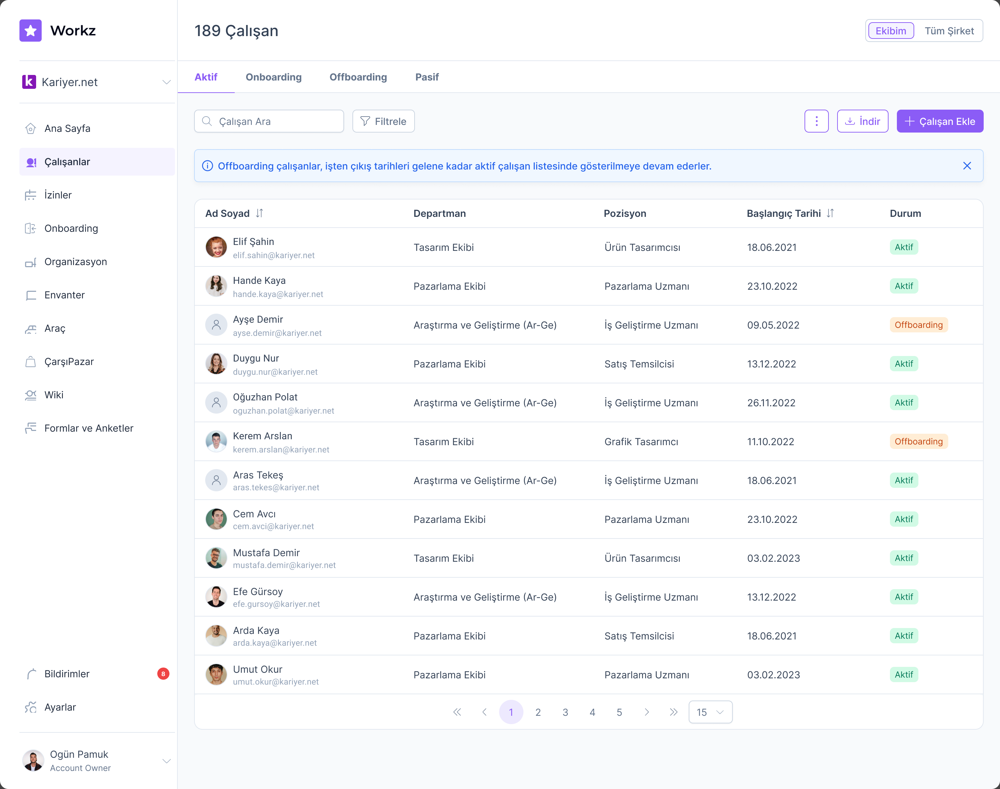
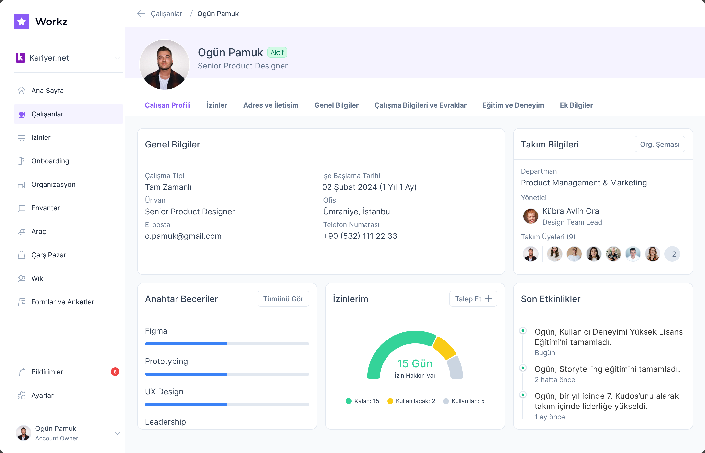
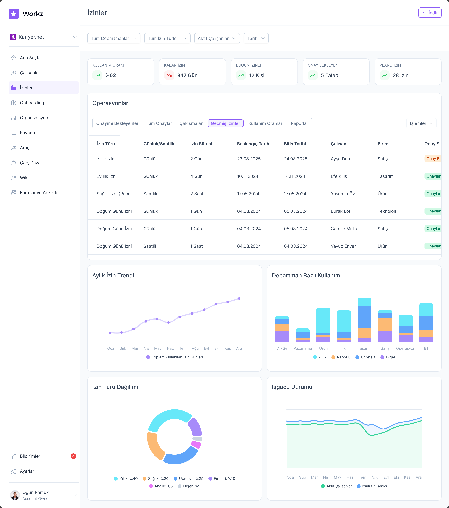
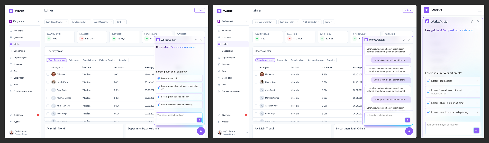
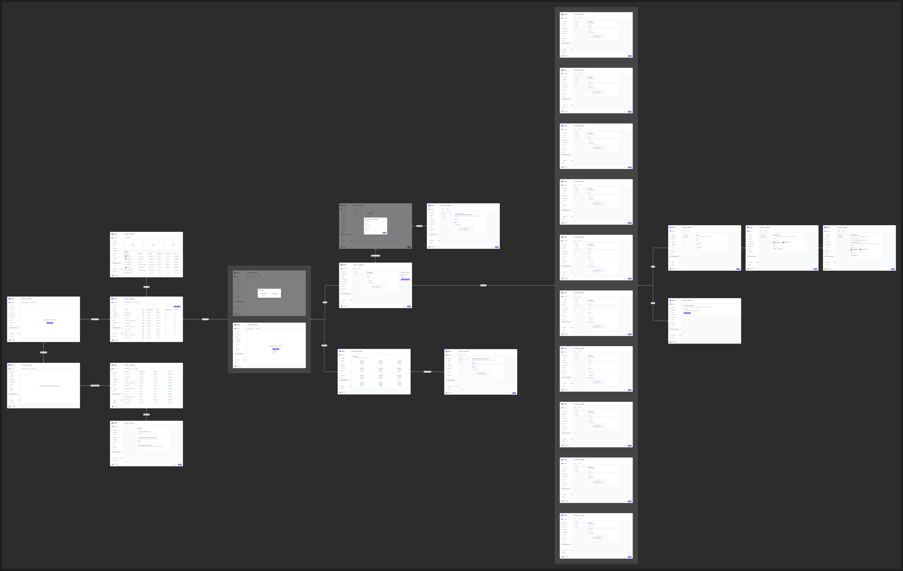

A dashboard that answers the morning questions
The home screen is a personal space. It greets the user by name and answers what an employee actually opens an HR tool to find out: how much leave do I have left, what's waiting on my approval, who on my team has something coming up? Managers get their pending approvals and team updates in the same glance.

Desktop and mobile aren't separate designs. One source of truth per widget, two layouts for free.
Employee management at scale
The employee directory is the screen HR lives in. Status chips, sortable columns, filters, and pagination all come from the component library, so the directory stays consistent with every other data surface in the product. Its variations such as active, onboarding, offboarding, and passive views, informational banners, and the empty state were designed as a set, each with its mobile counterpart.

Each employee opens into a profile with its own dashboard containing personal details, work information, documents, education, and leave, organized into tabs that reuse the same card and table components.

Leave management: from requests to insight
Leave is the highest-traffic HR workflow. The leave dashboard pairs the operational table with the analytics an HR manager plans around: monthly leave trends, usage by department, leave-type distribution, and workforce availability over time.

A chatbot where the work happens
The Workz assistant opens as a panel inside the screen the user is already on. The conversation UI carries the product's component language rather than looking like a bolted-on widget, and on mobile the same assistant becomes a full-screen chat.

Designing the flow before the screens
For the forms-and-surveys module I worked wireflow-first: every screen, dialog, and decision point mapped with its connections before any high-fidelity work. The wireflow made the module's real complexity visible early (where flows branch, which dialogs interrupt, what each state needs) so that the polished screens could focus on composition.
